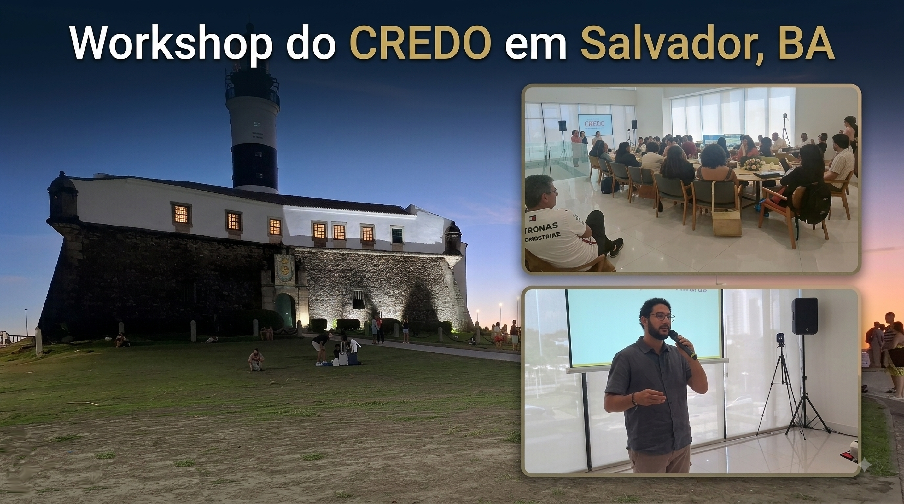

Abril de 2026

O CREDO 2026 (Clinical REsearch During Outbreaks) encerrou sua edição anual com a realização do workshop presencial em Salvador, reunindo pesquisadores de toda a América do Sul para discutir avanços em pesquisa de arboviroses e fortalecer capacidades científicas voltadas a emergências sanitárias. O encontro marcou o ponto culminante de um programa que combina módulos online, atividades práticas e integração entre profissionais de diferentes países.
O CREDO é um programa anual de treinamento voltado a pesquisadores clínicos, equipes multidisciplinares e profissionais de saúde que atuam em contextos de surtos. Seu objetivo central é capacitar participantes para liderar estudos clínicos durante emergências, ampliando a habilidade de países de baixa e média renda (LMICs) de gerar evidências robustas e responder de forma mais eficaz a crises de saúde pública.
A formação abrange todo o processo de produção de evidências clínicas — desde a coleta de dados descritivos de alta qualidade até o planejamento e execução de ensaios clínicos para terapias experimentais. O programa também promove colaboração internacional, compartilhamento de recursos e construção de redes de pesquisa duradouras.
O CREDO combina módulos online autoinstrucionais com workshops presenciais, integrando teoria e prática. Entre os conteúdos abordados, destacam-se:
Os módulos fornecem a base conceitual necessária para que os participantes cheguem ao workshop preparados para atividades práticas, discussões metodológicas e elaboração de planos de pesquisa.
A etapa presencial do CREDO 2026 reuniu especialistas, clínicos, enfermeiros, gestores e jovens pesquisadores para troca de experiências e desenvolvimento de competências aplicadas. Durante o encontro, foram discutidas metodologias inovadoras para investigação de arboviroses, estratégias de coleta de dados em campo e abordagens para estudos observacionais e ensaios clínicos em ambientes de alta pressão.
O workshop também reforçou a importância da colaboração regional, permitindo que equipes de diferentes países compartilhassem desafios, soluções e perspectivas sobre vigilância, manejo clínico e pesquisa durante surtos.
O programa busca capacitar os participantes para: